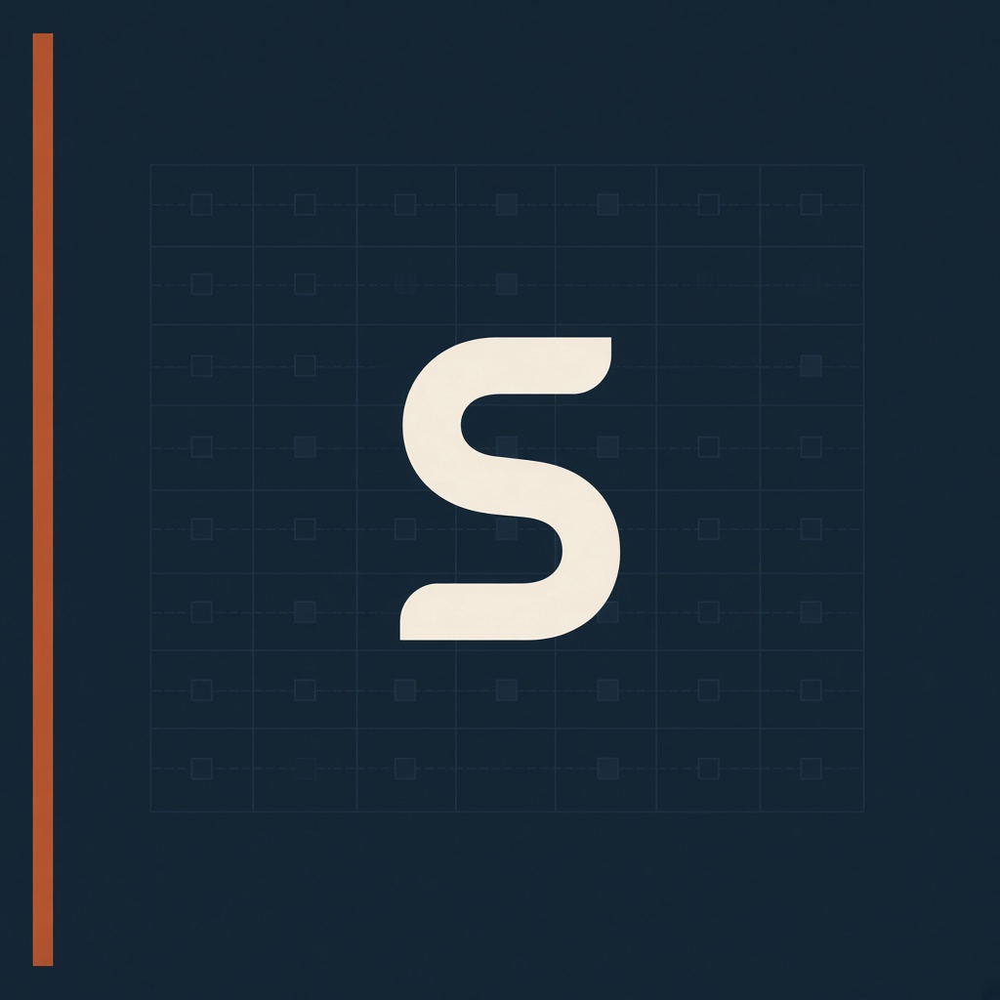

华为 2012 实验室 · 2026.07–09
岗位写的是大模型应用，实际做的是隔离代码执行环境：E2B 在 ARM 离线环境交不出去，切换 Cube-Sandbox；配 CPU/内存/网络配额；50/500 梯度压测；定位残留、超时、408/500。知识库 RAG 是评测底座上的配套，不是主线。

中山大学 · 信管 · 2028 届
给不可信代码加配额、把生命周期压测清楚、跑完不留容器。暑期在华为 2012 实验室做过鲲鹏 ARM64 离线沙箱；公开练习是 sandbench。
岗位写的是大模型应用，实际做的是隔离代码执行环境：E2B 在 ARM 离线环境交不出去，切换 Cube-Sandbox；配 CPU/内存/网络配额；50/500 梯度压测；定位残留、超时、408/500。知识库 RAG 是评测底座上的配套，不是主线。
面试官要的是隔离、失败分类、泄漏、可复现压测。映射到容器、K8s、稳定性、推理平台都成立。应用仓还在 GitHub，Infra 请先看 sandbench。
华数杯数学建模国家二等奖 · GPA 3.6/4.0